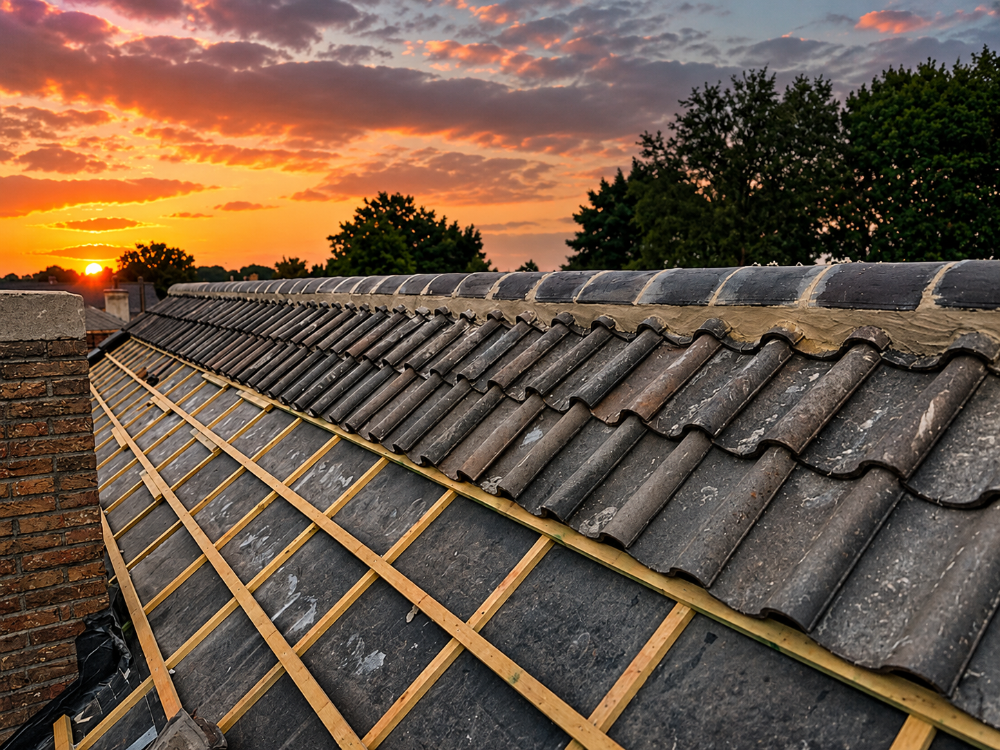
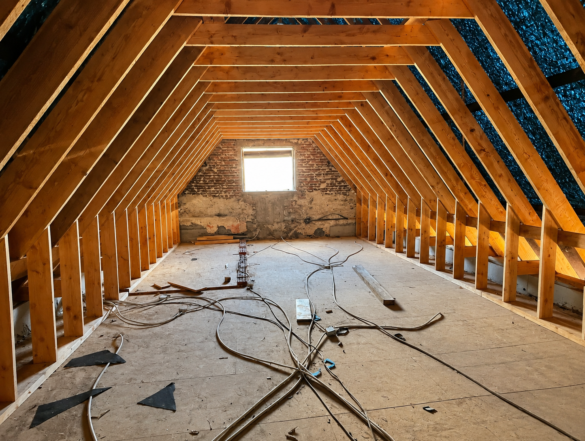
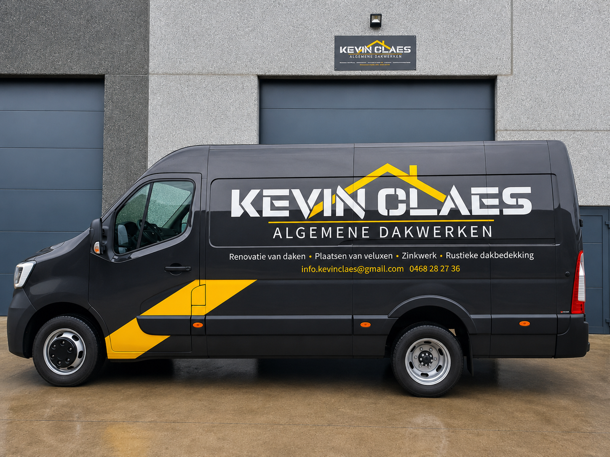

Dakrenovatie
Renovatie van bestaande daken met aandacht voor duurzaamheid en correcte afwerking.

DAKWERKEN · ISOLATIE · ZOLDERINRICHTING
Vakmanschap in dakrenovatie, isolatie en zolderinrichting. Van Velux en zinkwerk tot een winterklare, energiezuinige woning.
Diensten
Van renovatie tot afwerking. Eén vakman voor uw volledige dak.
Renovatie van bestaande daken met aandacht voor duurzaamheid en correcte afwerking.
Plaatsing van Velux dakramen voor meer licht en comfort.
Strakke en duurzame afwerking van goten, dakranden en aansluitingen.
Traditionele uitstraling gecombineerd met moderne kwaliteit.
Dak- en zolderisolatie die warmteverlies beperkt en uw energiefactuur verlaagt.
Van kale zolder tot volwaardige, geïsoleerde en afgewerkte leefruimte.
WINTERKLAAR
Een dak dat niet goed isoleert, kost u elke winter opnieuw geld. Kevin Claes isoleert dak en zolder grondig en richt uw zolder in tot een volwaardige, comfortabele ruimte, klaar voor de kou.
Een niet-geïsoleerde zolder is één van de grootste warmtelekken van de woning.
Onderhoud en afdichting die vocht en tocht buitenhouden vóór het stookseizoen.
Geïsoleerd en afgewerkt tot een volwaardige kamer, het hele jaar door bruikbaar.

REALISATIES
Een selectie van recente dakwerken, renovaties en afwerkingen.

OVER ONS
Kevin Claes staat voor degelijk dakwerk, duidelijke communicatie en een verzorgde afwerking. Van renovatie tot Velux en zinkwerk: elk project wordt uitgevoerd met aandacht voor kwaliteit en duurzaamheid.
WERKWIJZE
Een duidelijke aanpak zonder onnodige omwegen.
U neemt contact op en vertelt kort wat er moet gebeuren.
De situatie wordt bekeken en de juiste oplossing wordt bepaald.
U ontvangt een duidelijke offerte voor de afgesproken werken.
De werken worden zorgvuldig uitgevoerd en netjes afgewerkt.
CONTACT
Neem contact op voor een vrijblijvende offerte of meer informatie over uw project.